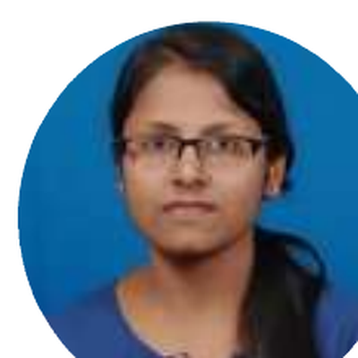

Integrated Lab-on-Chip for Pathogen Detection
Device for isolation, lysis, and detection of pathogens from body fluids.
- Granted Indian Patent No. 566961 (07.05.2024)
- PCT Application PCT/IN2025/050545 (04.04.2025)

PhD, Chemical Engineering · IIT Hyderabad
Mentor: Dr. Suhanya Duraiswamy
Micro Reaction Engineering Lab
+91 92386 72009
I am a researcher specializing in microfluidics, lab-on-chip systems, surface acoustic wave devices, pathogen detection, and nanomaterials for environmental and healthcare applications. I completed my PhD (2020–2025) at the Indian Institute of Technology Hyderabad under the guidance of Dr. Suhanya Duraiswamy in the Micro Reaction Engineering Lab.
My work bridges chemical engineering, biotechnology, and micro-electromechanical systems (MEMS) to develop additive-free cell lysis tools, multiplex PCR assays for rapid MRSA detection, and integrated lab-on-chip platforms for isolation and detection of pathogens from body fluids. I also explore photocatalytic nanomaterials and antimicrobial coatings.
Academic background and research training.
Indian Institute of Technology Hyderabad
Mentor: Dr. Suhanya Duraiswamy · Micro Reaction Engineering Lab
Prime Minister’s Research Fellowship (PMRF) awardee · Research Excellence Award (2025)
National Institute of Technology Karnataka, Surathkal
College of Engineering & Technology, Bhubaneswar, Odisha
Research projects, patented technologies, and translational work.
Device for isolation, lysis, and detection of pathogens from body fluids.
Travelling Surface Acoustic Wave microfluidic device enabling additive-free and label-free cell lysis while preserving cytoplasmic integrity.
Rapid multiplex TaqMan PCR assay for detection of MRSA directly from whole blood samples.
Extracellular biosynthesis using Alcaligenes aquatilis for photocatalytic degradation of reactive and azo dyes under visible light.
Industry experience and major achievements.
Ganapati Agro Product (P) Ltd., Odisha
Research Excellence Award — IIT Hyderabad 17th Foundation Day, 2025
Prime Minister’s Research Fellowship (PMRF), May 2021
NPTEL Discipline Star in Biotechnology, December 2020
Journal articles, book chapters, and conference proceedings.
Archives of Microbiology 208:435 · DOI
Biomicrofluidics 19, 041504 · DOI
Biomicrofluidics 18, 054104 · DOI
PLoS ONE 18(11): e0294782 · DOI
Environmental Science and Pollution Research · DOI
Critical Reviews in Biotechnology 43:3, 433-464 · DOI
Chemical Engineering Science 235, 116511 · DOI
IntechOpen · doi: 10.5772/intechopen.1014874
Fluid Mechanics, CRC Press
Fluid Mechanics in the Digital Era, CRC Press
IntechOpen · doi: 10.5772/intechopen.1006887
Chemical Engineering Essentials, Vol. 2, Wiley-ISTE
Functional Coatings, Wiley · DOI
IC-MNSS 2024, Springer · DOI
μTAS 2024 · DOI: 10.70477/SJXV2853
ICAMEMS-2023, Springer · DOI
MAMM 2022, Springer · DOI
Presentations, posters, and participation in national and international events.
Participated in Commercializing Microfluidic-based Devices – Prototype to Product: Issues, Bottlenecks, and Solutions, Hyderabad
3rd International Conference on APSCON 2025 IEEE Applied Sensing Application, IIT Hyderabad
Poster: Sepsis chip toolkit — 28th International Conference on Miniaturized Systems for Chemistry and Life Sciences (μTAS 2024), Montreal, Canada
Paper: Integration of AI-Enhanced on-Chip PCR for Improved Pathogen Detection — AIS-ISS 2024, NUS, Singapore
Paper: Advanced Design and 3D Numerical Simulation of TSAWs — ISSS International Conference on Micro, Nano and Smart Systems, IISc Bangalore
Paper: Rapid and Selective Cell Lysis with Chemical-Free Piezoelectric Actuator — MicroFIP 2024, Polytechnique University Hong Kong
Poster: Multiplex Taqman PCR Assay for Rapid MRSA Detection — HySci 2024, IIT Hyderabad
RSC Poster: TSAW based Micropiezoactuator for additive-free cell lysis
Design and 3D Numerical Simulation of TSAWs for cell lysis — 1st Indian National Conference on Micro Nano Fluids (iCOM 2023)
Performance Analysis of Orthopedic Screw — 2nd ICAMEMS-2023
Micro-Piezo Actuator for Cell Lysis — MAMM 2022
Extracellular biosynthesis of CuO-TiO₂ Nanocomposites — International Chemical Engineering Conference (IChEC)
Multiplex Taqman PCR assay for MRSA — Global Health Workshop, Chemical and Biological Microsystem Society (CBMS)
Biosynthesis of Cu-based nanoparticles — International Conference on Emerging Trends in Catalysis (ETC 2020)
Courses, workshops, and continuous learning activities.
Electronics and ICT Academy, Ministry of Electronics and Information Technology, Govt. of India · 8–19 Nov 2024
i-HUB Divya Sampark, IIT Roorkee & RBPL · 11 Sep – 20 Oct 2023
Japan Science and Technology Agency & Shimane University, Matsue, Japan · 8–22 Feb 2023
Nanofabrication Technologies, IIT Bombay · 23–25 Jan 2023
Artificial Neural Network Modelling for processing Metals and Materials · IIT Hyderabad · 13–17 Jun 2022